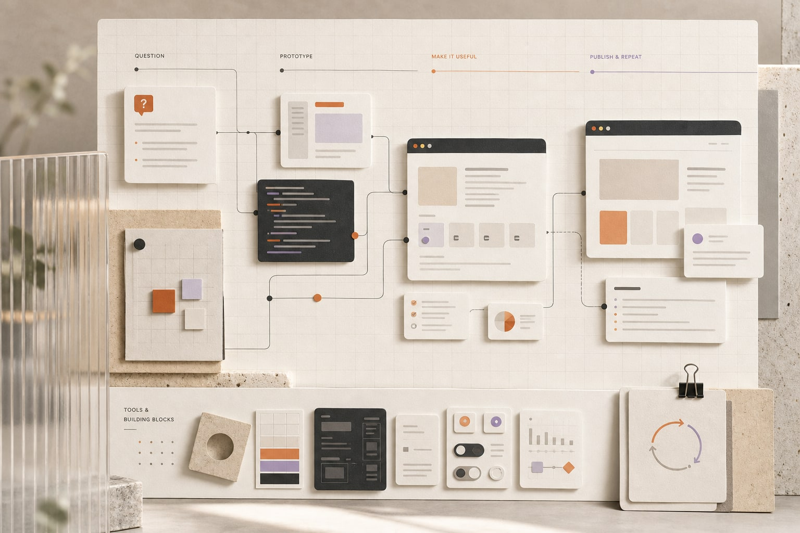

AI 實作與數位創作AI Practice & Digital Creation
AI 不只用來產生圖片，也用於網站、互動工具、軟體開發、內容整理與工作流程實驗。

Category網站、工具與內容實作
Year2026
Status可公開案例
01 — CHALLENGE
需求與限制
將 AI 從單次輸出轉化為能被操作、驗證、維護與公開使用的成果。
02 — SCOPE
負責範圍
- AI 輔助開發
- 靜態網站與互動工具
- 內容與視覺實驗
- 公開實作整理
03 — PROCESS
從需求到可確認成果
- 01
問題定義
從實際想解決的問題或想驗證的操作方式開始。
- 02
快速原型
使用 AI 協助文字、程式、視覺與互動原型的建立。
- 03
可用化
將單次輸出整理為可以操作、檢查與維護的網站或工具。
- 04
公開迭代
發布可公開成果，保留實作紀錄並持續調整。
04 — RESULT
05 — GALLERY
設計語境補充
主要實際素材已於上方呈現。以下 AI 圖只用於補充設計與工作語境，不作為實際交付成果證據。


!待補內容REVIEW PLACEHOLDER
後續將從 Kai AI Workshop 選出代表性網站、工具與軟體，建立獨立案例。